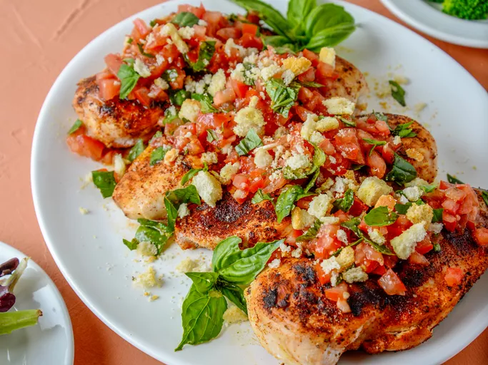

Este frango grelhado à bruschetta, coberto com ingredientes frescos da estação, é a cara do verão. Com tomates, alho e manjericão, esta receita colorida de frango grelhado transborda sabor italiano intenso. Os croutons crocantes adicionam um toque especial, garantindo que cada mordida seja simplesmente irresistível.
Nota do cozinheiro : A bruschetta normalmente é servida sobre pão torrado e crocante. Em vez disso, usamos croutons comprados prontos e esfarelados como cobertura para este prato. Para manter a crocância, os croutons são quebrados em pedaços ligeiramente menores, mas não triturados.
Reúna os ingredientes.Pré-aqueça uma grelha ao ar livre em fogo médio.
Enquanto isso, prepare a bruschetta.Pique os tomates e reserve o máximo de suco possível.Adicione azeite,alho,1/2 colher de chá de sal e 1/4 de colher de chá de pimenta-do-reino.Incopore as folhas de manjericão rasgadas;tempere com mais sal e pimenta a gosto, se necessário.Reserve a bruschetta.
Coloque os croutons em um saco plástico com fecho hermético e feche-o. Bata levemente em cada crouton com uma colher pesada para quebrá-los em pedaços menores, sem esmagá-los; reserve.
Coloque os peitos de frango em um prato e seque-os com papel-toalha. Tempere ambos os lados do frango com o restante do sal e da pimenta, alho em pó e páprica doce. Se os pedaços estiverem muito grossos, bata-os até ficarem com cerca de 1,2 cm de espessura.
Quando a grelha estiver pré-aquecida, limpe as grelhas e, usando uma pinça, unte-as cuidadosamente com azeite usando um papel toalha embebido em azeite.
Coloque os peitos de frango temperados na grelha untada com óleo e grelhe até que o suco que escorrer esteja transparente e o frango não esteja mais rosado no centro, de 4 a 5 minutos de cada lado, dependendo da espessura. Um termômetro de carne deve marcar 74°C (165°F) quando inserido na parte mais grossa do frango.
Cubra cada peito de frango grelhado com bruschetta e polvilhe com croutons esfarelados. Decore com manjericão fresco adicional.